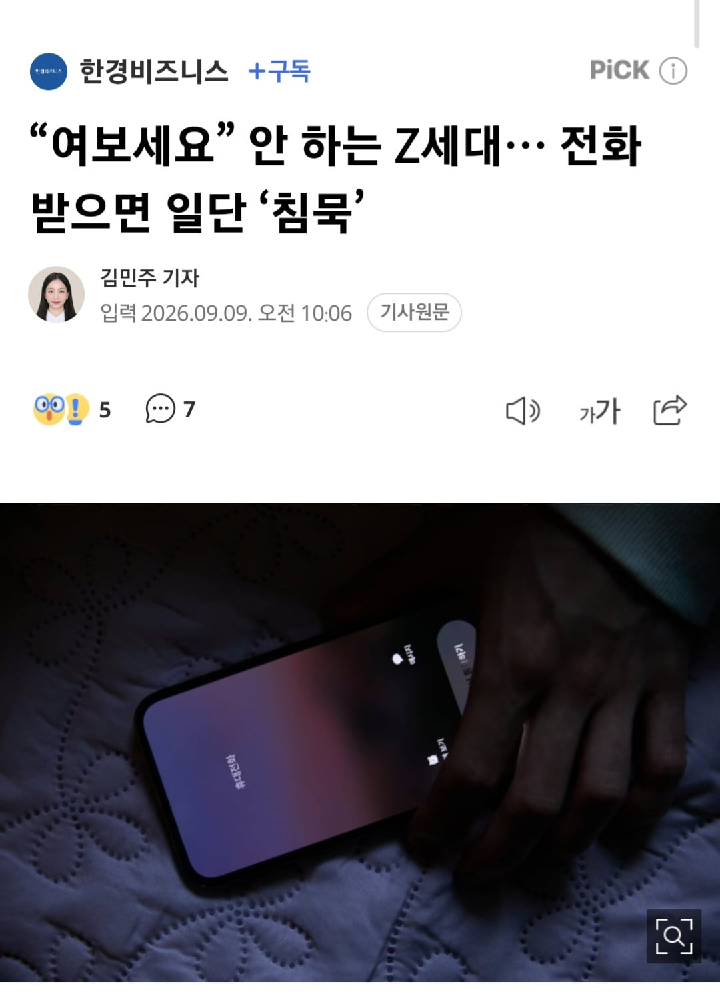

최근 뉴욕타임스(NYT)와 영국 가디언 등 외신은 젊은 세대를 중심으로 전화를 받을 때 먼저 인사하지 않는 새로운 통화 문화가 확산하고 있다고 보도했다.
https://n.news.naver.com/mnews/article/050/000011063

최근 뉴욕타임스(NYT)와 영국 가디언 등 외신은 젊은 세대를 중심으로 전화를 받을 때 먼저 인사하지 않는 새로운 통화 문화가 확산하고 있다고 보도했다.
https://n.news.naver.com/mnews/article/050/000011063
댓글꼬라지가 여성이 무서운 나라 이거랑 다를게 없네 ㅋㅋㅋㅋㅋㅋ
나도 저러는데? Ai로 목소리 복제한대잖아 씌발
싸가지 없는 씹대남들은 앞으로 모르는 번호로 전화 와도 아래와 같이 기합차게 응대할 수 있도록!
악! 여보신지 여쭤봐도 되는 것에 대한 허락을 구하는 것을 묻는 것에 대한 승인을 요구하는 것에 대한 의문이 있는 것을 발설해도 될지에 대한 질문이 있음을 보고하는 것에 대하여 적절한지를 검토해주실 수 있는지를 여쭈어보아도 되는지에 대하여 이상이 없는지에 대한 답변을 받고자 함을 인정해주실 수 있는지를 알고자 하는 것이 오도기합짜세해병으로써 타의 모범이 될만한 행동인지를 확인받을 수 있는지에 대하여 의문이 존재함을 표현해도 되는지에 관한 문제를 제기하는것이 기열찐빠황룡같지는 않은지를 체크해주시는 것이 가능한지를 알고 싶은 점이 있음을 알려도 되는 것인지를 묻는 것이 옳은 일인지를 판단해주실 수 있는지에 대한 답변을 감히 요구하는 것을 드러내도 되는지를 가르쳐주실 수 있는지의 여부에 대해 의문을 가져도 되는지에 대한 답을 요청하는 것을 알렸을때 이상이 없는지에 대해 인지할 자격이 본 해병에게 있는지를 정확히 이야기해주십사 감찰해주실 수 있는지를 시인해주실 수 있는지를 말씀해주실 수 있는지에 대해 질문 했을 경우 본 해병이 해병수육이 되지는 않는지에 대해 판정을 해 주실 수 있는지에 대한 요청을 하는 것을 받아들이실 수 있는지를 감사(監査)해주실 수 있는지 묻는것이 기열찐빠같은 요청에 해당하지 않는지에 대한 답이 본 해병에게 중요한 것임을 말씀드려도 되는지에 대해 발언하는 것이 무례하지는 않은지를 궁금해해도 되는 것인지에 대하여 명쾌한 해답을 해 주실 수 있는지를 바라도 되는지를 알기 위해 중첩의문문을 계속해도 되는지에 대해 거북하게 느끼시지는 않는지를 본 해병이 인지하게 해 주실 수 있는지를 알려주시는 것이 괜찮은지에 대해 심판해주실 수 있는지를 감히 제가 알게 되었다고 가정했을 때 해병대 내부에 이변이 생기지는 않는지가 공정한지를 심의해주실 수 있는지에 대해 아뢰어도 되는지 의문을 던지는 것이 해병의 명예를 실추시키는 것은 아닌지에 대한 정답이 무엇인지에 대한 질문의 적절성을 검사받을 수 있는지에 대한 설문을 하여도 괜찮은지를 검정(檢定)해주실 수 있는지를 결정해주실 수 있는지에 대해 본 해병이 감지해도 되는지의 여부를 지각(知覺)해도 되는지를 판단을 받을 수 있는지를 감히 제가 알아도 되겠습니까?
ai때문에 저렇게 하라고 하더라